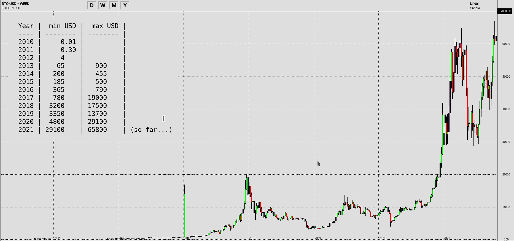

Blockchain Technology
and cryptoassets
¿Como surge?
- Subprime mortgage crisis (2008): ¿Is it really the origin?
- Satoshi Nakamoto publication on a small cryptography IIRC mailing list in late 2008 his paper. (mails, forum, NY Times & 10yrs)
- Quote: "The root problem with conventional currency is all the trust that’s required to make it work." (Also see Yuval Noah Harari "Homo Deus" inspired TED Talk)
- Today currency is also Free-floating like blockchain assets.
BitCoin: Precio Historico

Valor en vivo desde tradingview y cosas que pueden afectar el precio en la sección de volatilidad.
Precio BitCoin vs Halving
Y acá se puede ver una versión más "marketinera" de lo mismo.
En resumen comportamiento tipo el "oro" (principio de escasez, dificil de minarlo, etc...).
BitCoin: Market Behavior
Fuente: Why the Market is Thinking About Bitcoin Differently
Otra visión de Bitcoin como un assest/acción: "Fastest Asset to Reach a $1 Trillion Market Cap".
¿Que es blockchain?
- Criptografía asimétrica: PGP (1991)
- Base de datos distribuida: Cassandra, Oracle, ...
- Transmisión de datos entre pares: Torrent, TOR, Gossip, ...
- Consenso sobre los datos: PoW, PoS, PoA, ...
- Seguridad: Hash or Merkle Tree (1978), tolerancia a faltas bizantinas (BFT) y evitar el doble gasto.
- Teoría de juegos
Criptografía asimétrica (I)
La criptografía asimétrica se utiliza para crear las direcciones.
La clave pública es la dirección y para probar que uno es el dueño debe presentar la clave privada.
Un ejemplo de una curva elíptica utilizada por Bitcoin y Ethereum es Secp256k1.
Criptografía asimétrica (II)
Mi dirección en la blockchain
Bitcoin: How to generate private/public address (MUY similar a Ethereum)
DB distribuida y Seguridad
Al guardar los datos en una red peer-to-peer descentralizada, se elimina la posibilidad de que un jugador los altere.
Como los datos se guardan encadenando bloques con una estructura tipo Merkle Tree, una vez acordados no se puedan cambiar.
Cada bloque nuevo actualiza el estado de la blockchain y debe acordarse.
Merkle Tree

Transmisión de datos
entre pares
Consenso sobre los datos
- Proof of Work (Pow): Usado hoy en Bitcoin y Ethereum entre otros (como funciona y su algoritmo simplificado).
- Proof of Authority (PoA): Permite un consenso mucho más rápido, pero impone jerarquías.
- Proof os Stake (PoS): Futuro de Ethereum, Algorand, impone una jerarquía dinámica basada en la inversión.
- Otros consensos.
Teoría de Juegos
- Teoría de Juegos: Jugadores, Acciones, Estrategias, Información, Pagos y Equilibrios.
- Sistemas multiagente: Entorno, comunicaciones, planificación, comportamiento, acciones.
- Sistemas evolutivos. Como por ejemplo los algoritmos genéticos (Selección, cruzamiento y mutación), inteligencia enjambre, etc...
Ejemplo sencillo
La disrupción de Ethereum
| BitCoin | Ethereum | |
|---|---|---|
| Release | 9 Jan 2008 | 30 Jul 2015 |
| Release Method | Genesis Block Mined | Presale |
| Used for | Digital Currency | Digital Currency Smart Contracts |
| Mining | ASIC Miners | GPUs |
| Smallest Unit | 1 Satoshi 0.00000001 BTC 8 digits |
1 Wei 0.000000000000000001 ETH 18 digits |
| Purpose | Be a globally decentralized payment system. |
Be a decentralized system to power DApps. |
| Max Supply | 21'000'000 | No fixed supply |
| Block Rewards | 6.25 BTC Halving every 210'000 blocks |
2 ETH |
Nodos en Ethereum
- Full Node: Encargado de revisar que los bloques estén conforme al consenso establecido. Requieren tener toda la blockchain.
- Light Node: Es un nodo que no tiene toda la blockchain, solamente los headers de los bloques para poder verificar transacciones con el método SPV (Simplified Payment Verification).
- Nodo Minero: Full Node que intenta encontrar el hash correcto para crear el bloque.
- Minero No-Nodo: Usados en pools de minería y están conectadas a un Full Node.
Smart Contracts
en Ethereum
- Ethereum Virtual Machine (EVM)
- Development Environment: GethNode, Web3.js/Web3.py, SolidityCompiler, Truffle, Ganache, Testnet, Faucets, etc...
- ERC20 token standard (eip-20 & erc-20)
- Security concerns: DASP, SC Audits, Securing Keys, etc...
- Blockchain SC deployment (Infura, nodos, etc...)
- MetaMask (a Web3.js online wallet)
Smart Contracts
en General
- RSK (also using ETH EVM)
- Ethereum WebAssembly (ETH2.0)
- AEternity Sophia
- AlgoRand TEAL
- HyperLedger JS or Go
Limitaciones
de BitCoin y Ethereum
| BitCoin | Ethereum | |
|---|---|---|
| Block Time | 10 Mins | 12-14 segs |
| Throughput | 7-8 tps | 15-20 tps |
| Energy Used (Yearly) | 77.78 TW | 14.81 TW |
| Transaction Fee | 55 usd (aprox) | 30 usd (aprox) |
| Scalability | The Lighting Network (Layer 2 solution) + RSK Network for SC |
Moving from PoW to PoS (with ETH2.0) and Layer 2 Raiden Network |
| TX Confirmation Time | 30 mins | 40 secs |
Mundo Crypto: Tokens
Tokens: ERC-20 (ie. USDT)
Non Fungible Token (NFT): ERC-721 (ie. CryptoKitties)
Raise Funding, Inversiones, Financiamiento, etc...
- Initial Coin Offering (ICO, publicas)
- Security Token Offering (STO)
- Initial Exchange Offering (IEO, privadas)
- Token Generation Event (TGE)
Utility (p/ej SUBE, sin regulación) vs Security (Inversion, SEC/CNV regula). -- Howey Test
Mundo Crypto: Jugadores
- Regulaciones: Know Your Customer (KYC) y Anti-Money Laundering (AML)
- Wallets Software: Electrum (BTC), MetaMask (ETH), Trust, etc...
- Wallets Hardware: Ledger & Trezor.
- Multisignature Wallet (ie. GNOSIS)
- Exchanges: Coinbase, Binance, Bitfinex, Kraken, CEXio, etc...
- Oracles: ChainLink, Provable, Uniswap, etc...
- Mining farms/pools: Un jugador más del PoW.
Mundo Crypto: Exchanges
Exchanges descentralizados: Uniswap, Liquality, DDEX, etc...
Mundo Crypto: Inversiones
- Inversiones: Vesting, Profit and Loss, Mercados de futuros, DeFi.
- Value of tokens can be pumped/dumped by players:
- Pumping exacerbates Fear Of Missing Out (FOMO)
- Dumping alows player to buy cheap (GameStop & YT Sorkin)
- HODL?!?: popular cryptocurrency terms (Reddit, Twitter, Telegram, etc...)
- Bull vs Bear markets:
- A bull market is a market that is on the rise and is economically sound.
- A bear market is a market that is receding, where most stocks are declining in value.
Mundo Crypto: Mercado
Original article from HowMuch.net, a financial literacy website
Above article is a snapshot. See realtime updates at CoinMarketCap.
Blockchains
- Bitcoin
- Ethereum
- RSK
- Hyperledger Fabric
- Ripple (XRP payment protocol)
- Litecoin
- BFA (Blockchain Federal Argentina)
- EOS
- Ethereum Classic
- Zcash (red usada para Darknet, MUY anonima)
- Monero (XMR) (también anónima)
- AlgoRand
- AEternity
Volatilidad

{kind=link}
{kind=link}
{kind=link}
{kind=link}
{kind=link}
{kind=link}
{kind=link}
{kind=link}
{kind=link}
{kind=link}
{kind=link}
{kind=link}
Articulo HowMuch y gráfico en tiempo real (elegir BTCUSD).
Ver caida de Dodgecoin después de hablar Elon Musk en SNL el 8 de Mayo 2021 (Dodgecoin es un fork de Litecoin que es un fork de Bitcoin).
Luego la caida del Bitcoin después de que Tesla no lo acepte como forma de pago (twit de Elon Musk el 12 de Mayo 2021)
Y finalmente el impacto de las ultimas restricciones en China a las digital currencies (impuesto el 18 de Mayo 2021).
Stable Coins
¿Futuro?
Layer 2 networks
Allowing faster and cheaper transactions
- The Lighting Network (bitcoin)
- Raiden Network (ethereum)
- Tron (Explorer): Uses PoS
Nuevos Servicios
- InterPlanetary File System (IPFS)
- Supply Chain (HyperLedger)
- Voting & Democracy
- Notarios (Proof-Of-Existence, BFA, etc...)
- Libertad de expresión y derecho al olvido.
- Decentralized:
- Exchanges (hoy ya existen pero hay limites, lo más innovador fue el Atomic Swap)
- Market / Marketplace (aka Amazon. MLibre, AppStore, etc...)
- Courts
- Finance (DeFi) which requires oracles (Chainlink, Provable, Uniswap v2, OMoC, etc...)
- Betting/Gambling
Ethereum 2.0
- Based on PoA
- Eth has 30 tx/sec, Eth2 up to 100k tx/sec
- Minimum of 16,384 validators each staking 32 ETH
Para seguir aprendiendo...
Princeton bitcoin book and online course
Infografias buenas...
{kind=link}
Buenos articulos: